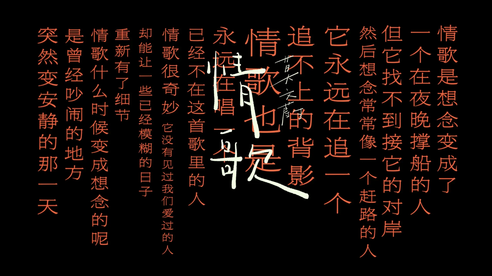

Zine#59
和手機的關係、謠言、已讀不回
目錄
開頭的音樂分享會有人期待嗎？不管如何，如果你想找點歌聴，推薦聴聴 上期 分享的 Men I Trust！除此之外，這周 Hopico 也更新了一期 ⸺ 原来莫文蔚最好的 9 首情歌，都藏在滚石唱片。好痛！特别痛！ ⸺ 我也把裡面提到的専輯也找來聴了，你也可以去聴聴看！
{kind=link}

News | Article
Actual aunting: New baby edition by Frances
Frances 之前寫了 Raising kids when you're not a parent，他建議有空的話，可以帮身邊的人照頋一下孩子。你可能會問為什麼，這不是給自己找事嗎？非面說個理由的話，那就是出於愛，愛對方所以會想著稍微分摊一點重擔，大家之間相互支撐。但那篇文章裡 Frances 沒有講具體可以怎麼做，於是他又寫了一些文章來分享，這篇是新生兒篇。
WordArt is still supported… in Microsoft Outlook! by Dan Q
如果你接触過早期的 Windows 系統，你大概見過 Office 工具裡的藝術字體 (WordArt)，它們已經被淘汰了，但 Dan Q 發現原來在 Outlook 裡還支持插入 WordArt，說不定微軟還維護著一組運行舊版 Windows、Office 和 Internet Explorer 的虛擬機集群，專門用來用來將這些 WordArt 轉成圖片😂。
Your phone is not the problem by Dan Q
我甚至不見得每次響鈴都會拿起手機（而且我關掉了大部分的通知，所以那些都只是「反正我有在看手機時順便瞧瞧」的訊息）：如果我正在忙別的事，管它剛才「叮」了什麼我都會晚點再處理，沒錯，這甚至包括即時通訊軟體（如果你真的非得要我立刻回覆，而且想知道我到底能不能回，那你幹嘛不直接打給我，嗯？）。
我現在也是這樣，手機上沒有什麼娛樂應用 (Bilibili、小紅書等)，只有工具應用，很多應用的通知我都關了，只保留了部分我關心的，但它們只會在通知中心彈出，我想看才去看。微信我已經好久沒看過朋友圈了，我也關閉了微信的通知，有消息來了，手機也不會振動，只會出現在鎖屏的通知中。我和 DanQ 的想法一樣，如果真的是要紧事，我想對方會直接給我打電話的，如果不打電話，說明也不是得要紧的事，晚點看晚點回也沒關系。
忘了在哪篇文章看到的，人們以為是自己在用手機，但其實很多時候是手機在「用」人，人們不是主動去用手機的，而是手機一直在彈通知，吸引人去用它。打開一個應用，本來是帯著某個目的去用的，却容易被應用裡的內容分了神；打開手機後，看到娛樂軟件也可能忍不住打開看看 (所以我干脆都刪了)，不知不覺地又陷在裡頭，又花了大量的時間在玩手機。
我也很想把微信給卸了，它其實給我很多干擾，當我専注時，突然來的微信通知會讓我紧張和分心，我也會好奇是誰的信息，會糾結要不要看。有時打開一看，可能只是什麼群裡的 @所有人 的無關紧要的通知，但我打開微信後，說不定就會被公眾號、朋友圈等吸引住(所以我把朋友圈關了，公眾號也刪了很多)，就會浪費時間在手機上，偏离了原來做的事。
我現在用手機的時間也還是不少，平均每天還是有兩到三個小時，多時候是打開瀏覧器看一些論坛和博客文章。我也還沒做到可以把手機完全放一邊，很久都不玩，但我還是會慢慢調整我和手機的關係，重新掌握主動權，减少它對我的干擾。
Knitting and Beastie Boys, a scale of illness (and hope) by Hollie
Hollie 和 Greg 製訂了一個標準，用來衡量當前的狀態，我覺得蠻不錯的。
由南医大跳楼事件和各种事件引出的一些碎碎念 by DavidYR
前陣子也看到了這個事件，一個學生的父母出了事故，父親去世了，母親也還在重症監護室，他可能也有其它壓力，最終選擇跳樓輕生了。我無法身同感受，無法想象他當時有多絕望，以至於生命也不要了。願他安息吧。
事件中，有人造謠說學生的导師只給他 3 天假期，引导大家覺得导師和學業的壓力是壓跨學生的最後一根稻草。後來相關親屬澄清了事實，导師其實給了學生足够的時間去处理和休息，也給了一些資金帮助。
也許造謠的人不是故意的，也許是因為自己有导師和學業方面壓力，所以猜測這個學生也是同樣的原因，但這是很不負責任的，既然沒有實際證據就不應該胡亂猜測，而其他人也沒有考慮過謠言的真假，一起推波助瀾，讓謠言越滾越大，也傷害了無辜的导師。
互聯網上謠言一直很多，今天是這樣，明天可能就反轉了，後天可能又又又反轉，分不清誰說的是真，誰說的是假。負責任的做法應該是自己去抽丝剝繭，去調查事實(也挺困難的)，如果自己無法查證事實，就不要去跟風傳播信息，未知全貌就不要妄下結論。
這些謠言多了，惡性事件看多了，人難免會受到影响，可能會變得不敢相信別人，处处提防別人，人心會變得冷漠，路上見到別人有困難也不敢或不願帮忙，怕惹上什麼麻煩。我自己就有這樣的心理，但這不是我想成為的人，我想成為的是看到別人有困難時，願意伸出手去帮一把的人。
關於城市中人与人的疏離，也可以看看 Protesilaos 的 About the coolest Seoul neighbourhood and erosion of public spaces。
The Ray Reunion by Robert Kingett
文章描述了 Robert 和 Ray 的一次約會，Robert 的文笔依然很細膩，推薦去讀原文。
他在幫我鋪床。
這個念頭如此令人震驚，如此全然陌生，讓我動彈不得。男人是不會做這種事的。男人只會索取他們想要的，然後留下滿地狼藉——無論是情感上的、生理上的，還是兩者兼有。他們不會撫平你的床單，不會拍鬆你的枕頭，更不會在與你共處之後，還動手恢復你在這世上僅存的避風港。從來沒有人為我這樣做過。從來沒有。
About consistency and structure by Protesilaos
TL;DR
大理石是耐用的，但大理石雕刻的雕像是脆弱的，是否穩定取决於結構，而結構取决於它是如何被構建的。人也一樣，人的結構是由行為/行動構建的，是否穩定（意志坚定、坚韌、健康…）取决於人的一次次行為。行為都有代價，需要自己取舍，做一些行為可能需要克制自己不做另一些行為，克制需要一定的意志力，意志力不會凭空產生，但可以習得，選擇一件小事，持之以恆地去做，就可以產生和煅煉意志力意志力。
摘录
既然材料本身是耐用的，為什麼大理石（一塊堅硬的岩石）製成的東西會如此敏感？答案是穩定性取決於結構。雕像的建造方式使其變得脆弱。僅僅一推就會導致它倒下，造成不可修復的損害。
我們的結構由我們與世界的關係中所做的事情組成。每一種聯繫都促成了我們存在的建構。行為具有複利效應。例如，如果我今晚喝了一瓶酒，明天早上我會感到遲鈍。這意味著我將無法履行我的承諾，比如給植物澆水和帶著我的狗去遠足。即使我仍然設法履行職責，我的表現也不會達到巔峰。無論如何，我都不會像往常一樣敏銳。這反過來意味著我在當天晚些時候會感到更加散漫。這將產生連鎖反應，每一項都會制約我隨後的選擇。
換句話說，你與你的所作所為共存。你行為的結果是不可轉移的。例如，我不能付錢給某人讓他們替我感到不適，好讓我能盡情飲酒而免受其後果。如果我不希望忍受那種遲鈍感，我唯一的選擇就是根本不喝酒。而且，是的，這意味著我也無法享受那種樂趣。
因此，我必須在一個領域練習克制，以便在其他領域保持專注。這同樣具有複利效應。透過不浪費我的生命力，我擁有了做我想做的事情所需的能量，例如寫這篇文章。這樣做給了我正向的回饋。它磨練了我的思考，提升了我的寫作，並證明我依然像往常一樣精力充沛。
在即時享樂與貫穿一生的健康之間，存在著一種不可避免的權衡。
如果我只考慮短期，我就會想讓當下的快感最大化。以我喝酒的例子來說，我會完全放縱自己，甚至喝過頭。也許第一次不會，但最終會陷入這種習慣，因為我心中沒有任何遠景——也就是長期目標——來幫助我檢視自己是否正朝著正確的方向前進。
[…]
無論你做什麼，都有代價。你以縮短活力為代價，換取潛在的興奮時刻；或者你以犧牲潛在的興奮時刻為代價，來延長你的活力。這取決於你想要什麼。但請明白，你無法避開這種權衡：犧牲總是存在的。
現在你可能認為有折衷方案，既能保持穩定，又能偶爾享樂。我同意，如果謹慎行事的話是可以的。但我知道，一旦踏上滑坡，無論你多麼優秀，最終都會滑倒。即使是頂尖的登山者也會在健行時遇難。
[…]
當你發現自己正以「之後會更努力」為承諾，來討價還價以換取更多短期滿足時，你內心深處知道，那只是你的散漫在編造謊言。
想像你那散漫的自我就像一個獨立的靈魂，它有自己的靈性生命，但需要一個身體來體驗世界。於是它佔據了你的身體，計畫剝削並虐待它。這個靈魂之所以能得逞，是因為你沒有加強自己的防禦。
開始將你的各個面向視為具有自身目標的獨立實體。這是一種心理技巧，一個讓事情更容易推理的比喻。你會意識到，你竟然允許自己的一個側面去控制所有其他側面。一小部分竟然能支配整個有機體的行動。這是你想要的嗎？
要建立生活架構（由你的行為以及你與世界的關係所組成），你必須依靠自己的意志力，或是讓他人參與其中。與他人一起活動能增加樂趣，還能互相監督；而獨自行動則需要對自己嚴格要求。
我認為最可靠的方法是透過社交。[…]
然而，意志力並非憑空而生，它必須作為一種發展成熟的力量預先存在。只要你花時間把小事做好，意志力自然會產生。讓自己承擔後果，去真切感受那種滋味。
不要隨意走捷徑。那是「短期利益極大化者」的標誌，而這種人往往深陷長期的痛苦。與其心不在焉地做一百件事，不如把一件事做好。記住「保持枯燥」這個觀念。不要過度思考，也不要追求花俏。挑選你能想像到最平凡的任務，並全神貫注地去完成它。
如果你以這種方式投入任何事情，你會發現它成了你生命力的組織原則。你的整個身心會一點一滴地向它傾斜。剛開始，你會有狀態不佳或不穩定的時候。但請堅持下去。嘗試去做，即使表現不如以往。重點在於向前推進，無論多麼笨拙，而不是追求世界紀錄。例如，沒人會因為你在房子周圍走了完美的 3 分鐘而給你獎勵。慢慢來，哪怕是在半夢半醒間，也要去做。我不在乎是什麼：去做就對了。
Desire Path by 皮皮
一幅漫晝，公园修路，但大家總是另闢蹊徑，預測不了一點。
以前也分享過類似的文章：
- A Tale of Two Bridges by pieterh (via Zine#49)
- Building without predicting by Derek Sivers (via Zine#57)
已讀不回 by YangBear
跟不熟的人談話我甚至會想要當句點的那一方。比如對方回應我，如果我的回應是不需要對方再回應的，那乾脆是不是就不要回應了以免對方還要再回一個什麼。或是有時候真的加上「不用再回我」這樣的附註。這樣的小心思讓我覺得很煩，所以避免談話還是最根本的解決方式。
我也一樣，有時不知道回什麼，好像也沒什麼好說的，但不回應又好像把對方晾在一邊，心裡又有些纠結。郵件也是這樣，如果第一次收到別人的郵件，即使沒什麼想說的，但也要回復一下對方吧，毕竟對方可能不確定我有沒有看到，可能在等著我的回復。但再收到回復，此時也沒什麼想說，那還要不要回呢？就像 YangBear 說的，我也是傾向當句點的那一方，我就會纠結一陣，不過最後可能就不了了之了。關於回復，我也比較認同 Chlorine 說的：
在我不认为我能为您提供足够有价值的见解，或者我们的思想缺乏真正的共鸣时，沉默是比敷衍更得体的回答。
Cool Bit
Page Rage: Destroy any web page
酷！好玩！會有個小人出現在屏幕，你可以控製他開枪將頁面元素破壞掉，挺爽的。
My design bookshelves by Marcin Wichary
作者做了一個可交互的書架，酷。
The Warren by Kinsey Carlson
一個「免子洞」:P
點擊「帶我看點東西」(show me something) 來開啟一段探索之旅。閱讀摘要，如果你想了解更多，可以深入查看、閱讀或聆聽，然後給予好評或差評。
獲得好評的主題會進入你的「收藏窩」(Den)。把你沒興趣的東西埋起來，「給我點討厭的東西」(give me something to hate) 就會開始為你尋找那些與你品味相去最遠的內容。如果你留下其中一個，它就會作為一隻特別的兔子住在你的窩裡。
「偏好我的品味」(Tilt toward my taste) 預設為開啟；你可以隨時關閉它，來一次純粹的隨機抽取。
2026 Small World in Motion Competition
2026 微觀世界動態攝影大賽作品。
-
科學家成功將蒼蠅的整個神經系統編碼並開源，有人拿來做了一個仿生果蠅機器人，它的行為還真像果蠅，你可以點開看看裡面的視頻。
Cheer Up by War and Peas
外星人：「哥們儿，別難過了，咱一起去找點樂子！要不炸個月球？還是你想去里洞裡冲浪？…或者找咱地球老友一起嗨！」
(ﾉ>ω<)ﾉ (ﾉ>ω<)ﾉ (ﾉ>ω<)ﾉ
-
頁面交互挺有趣的，不知道 CD 是怎麼做的，也想用來呈現我的 Album Wall。
-
電子管電腦，看著挺酷的。
這是一台現代的 8 位元設計，採用 1950 年代的回收真空管打造，運作時會發光並加熱整個房間。
[…]
真空管需要高電壓才能高效運作，不適合膽小的人。它們每秒可以切換數億次，在 1950 年代，它們與鍺二極體結合，成為許多令人驚嘆的電腦設計基礎。
這台真空管電腦到目前為止表現良好，不像之前的系統曾經發生過兩次爆炸。第一次發生時，我拼命地拔掉插頭，彷彿命懸一線，Judy 大喊：「一切都還好嗎！」。第二次發生時，我只是稍微驚慌了一下，Judy 則繼續裝飾聖誕樹，但後來她買了一個驚喜禮物送我——一支滅火器！
但最重要的一點是，要有一位可愛的妻子，她深知你雖然傻得可愛，但兩人的共同生活卻是精彩萬分。
-
越野摩托模拟遊戱，你可以看比賽、切換不同視角(有點暈)、操作車手、改造場地 (應用上去有點慢)。
-
操作火柴人來一場劍擊搏殺吧！玩著有點蠢，但也挺好玩。
-
捏一匹你的战馬 (馬這麼大？這對嗎？)去迎战吧，語言裡有中文。
Tutorial | Resource
How to get a DOI for your blog posts by Terence Eden
作者分享了如何給博客文章生成 Digital Object Identifier (DOI)：
DOI 名稱是物件的數位識別碼，適用於任何物件——無論是實體的、數位的還是抽象的。 DOI 解決了一個常見的問題：追蹤事物。這些事物可以是物質、材料、內容或活動。
給文章加上 DOI 可以方便別人引用，如
https://doi.org/<DOI Value>，這樣即使你換了域名，文章的 URL 就變了，但 DOI 引用是不變的。不過 DOI 也有個問題，它是中心化的，而不是去中心的， DOI.org 可能會倒閉，它也可能成為壟斷組織而變坏。
-
一些 UI 設計的建議。 以前也分享類似的：
Visual design rules you can safely follow every time by Anthony Hobday
我從中借鉴了一個建議，關閉 Light/Dark 主題切換時的過渡效果，减少一些過渡時奇怪的表現。
Creating a Blog in Gemini:// by Brennan Kenneth Brown
文章介紹了 Gemini (protocol)，包擴它是什麼、為什麼用、怎麼用，以及分享了很多相關的資源。
[…] Gemini 是一個現代且極簡的網路協定，是
https://的替代方案，並且需要使用不同的瀏覽器。它是由一位化名為 Solderpunk 的開發者在 2019 年建立的。與 HTML 不同，每個頁面都是用 Gemtext 編寫的，這是一種僅包含標題、連結和列表的精簡格式。每次連線都透過 1965 端口上的 TLS 運行，採一請求一響應模式，隨後連線即關閉。
Code Related
CSS tabular & old-style figures: fix dashboard numbers by Carmen Ansio
文章分享了一些 font-variant-numeric 的效果和使用場景，可以了解一下，說不定能用上。
Animating CSS border-image by Preethi
文章分享了如何用 border-image 實現 border 的動畫，挺酷的。
<meta name="viewport"> - interactive-widget
interactive-widget用於指定互動式 UI 元件（例如虛擬鍵盤）對頁面視口產生的影響，例如决定出現虛擬鍵盤時，fixed 定位的元素和視口的相對關係。See also: WebKit supports interactive-widget … and hopefully Safari will too? by Bramus
Sidenotes with CSS anchor positioning by Vincent Bernat
文章分享了如何用 CSS anchor positioning 實現旁注，純 CSS 的實現，效果挺好的，整體實現也比較簡洁。
Better Icon and Label Alignment by Ahmad Shadeed
當文字換行時，想讓 icon 保持在第一行，且在第一行居中，可以利用 lh (單位行高) 去計算 icon 的偏移量。
代碼
樣式：
.list-item { display: flex; /* 讓 icon 保持在第一行 */ align-items: start; gap: 0.5rem; } .icon { /* --icon-size is defined via JS. */ --size: var(--icon-size); --offset: calc((1lh - var(--size)) / 2); /* 偏移使 icon 居中 */ transform: translateY(var(--offset)); }HTML:
<ul class="list"> <li class="list-item"> <svg class="icon"></svg> <span class="label">How to align an icon to a label.</span> </li> <!-- Other items --> </ul>Pluggable, Extensible, and Playful DevTools by Anthony Fu
Devframe 是一個與框架無關的基礎架構，只需定義一次開發工具，即可將其引入不同的主機框架、獨立適配器和編碼代理中。
您可以將 Devframe 視為構建開發工具（DevTools）的框架，就像 Nuxt 或 Next.js 提供構建 Web 應用程式的框架一樣。
slop lasagna by Dan Abramov
對我來說通常有效的方法是，嘗試建立具有正確約束且大致合理的層級，但允許在這些層級內部存在爛代碼。有些爛代碼是可以接受的，但有些則不然：
- 我關心數據如何在系統中流動、什麼是由什麼派生的、輸入和輸出，以及任何被存儲的東西。
- 我關心最終體驗。明顯的錯誤、糟糕的性能和不一致的行為都是壞事，需要深入調查。
- 我關心對基礎抽象的誤用。如果 React 用錯了或數據庫用錯了等等，那就不妙了。
除此之外，我不太在乎盒子裡裝了什麼。它可能過於冗長，可能抽象不足或過度抽象，可能不夠優雅或有待清理，甚至可能有點不靠譜。但如果它在末端節點運行良好，並且在邊界處受到約束，我就不太擔心那些中間管理層。
如果它易於重寫且不傷害用戶，那就沒問題。
AI Related
Comments on AI, financial bubbles, and career orientation by Protesilaos
- LLM 是有用的，泡沬會破，但 LLM 不會消失。
- 對很多知識工作者來說，工作不再有保證，犹其是初級人員。
幾年來我一直認為，一個人的韌性取決於其社區的凝聚力。透過共享資源和展現彼此的團結，社區民眾能夠以較少的資源創造更多的價值。當成員開始表現出「我、我、我」的行為模式時，社區就會瓦解；反之，當所有工作都以「我們」為中心時，社區就會變得更強大。
那些無論是出於原則還是環境因素而奉行個人主義的人，都必須將其心態及伴隨的行為模式轉向集體主義。只有這樣，他們才能創造或把握機會，在協作與共同生活的網絡中與他人建立聯繫。
換言之，為了在 AI 時代不被淘汰，重新訓練自己是必要的。這包括必須不斷更新的技術敏銳度，以及強大的社交能力。人們再也不能像過去在許多行業中那樣習以為常地做事，也就是扮演一個功能上等同於優秀機器人的角色。
具有集體主義精神的社區也為地方主義和社會主義路線的政治思考奠定了基礎。財富正集中在越來越少的人手中。中產階級正在瓦解，因為許多知識工作者被迫從事他們原本根本不會考慮的體力勞動 (menial jobs)。藉由將分享文化銘記在心並拋開個人主義的迷思，人們能更好地準備去推動那些至少具有更強親社會性質的政策，或者無論如何，不去支持那些已經控制了地球上幾乎所有財富的既得利益者。
Introducing System One Models & Jev
最近新出的模型，他們称為 System One Model1，這個模型比 LLM 響應更快，輸出的是結構化的數據，據說輸出成本基本為零，可以當作是一個智能的條件判斷語句。具體可以看看 它和 LLM 之間的不同。
它的一個使用埸景是作為一個通用的分類器，它可以在需要作判斷的地方利用 LLM 的能力做判斷，給出比 LLM 更具一致性的結果。
另見：
- Jev means structured output is interesting again by Sean Goedecke
- Two techniques for working with System One models by Sean Goedecke
- System One models like Jev can train their own replacements by Sean Goedecke
How I Vibed a Proof of Conway’s Conjecture by Dan Abramov
文章記录󠄃了作者用 AI 嘗試證明康威猜想的過程，最終他確實得到了一些結果，但整體看下來，LLM 還是會經常胡言亂語，而作者因為對這個領域不熟，相比數學家，需要付出更多才能有一些結果。
我認為這次實驗展示了「AI 能一鍵搞定」與「你必須是專家」之間存在著多大的空間。我確信，只要是對該領域稍微比我（完全不懂）更了解一點的人，都能以快得多的速度達成同樣的結果。我只能憑感覺判斷模型何時陷入停滯或在胡言亂語，卻無法指出哪些方向是有前景的。這讓整個過程感覺像是一場認識論的行為藝術，而非最直接的路徑。
「燒掉一切」（並挽救剩下的部分）救了這個專案。我兩次這樣做，都讓專案重新聚焦在真正有意義的部分。
-
一些有趣的自定義指針效果，挺有趣的。 (打開後會有聲音，也許你想先將音量降低點再打開，因為是 AI 生成的，所以我放在了這個部分。)
thedaviddias/Front-End-Checklist
The essential checklist for modern web development, for humans and AI agents.
UI Skills for Design Engineers
UI Skills is a collection of design-engineering skills to help humans and agents create better interfaces.
-
the runtime your coding agents live on.
(via Beware the side quest: tmux vs. herdr by Sal)
Tool | Library
-
Hand-drawn arrows and handwritten labels for your website. Pure CSS, no JavaScript, no build step — one self-contained file.
挺好看的標記。
-
A css framework recreating parts of the DS / DS Lite's UI.
Photosynthesis: 2-Lens Camera — Zoom and enhance.
一個 iOS 應用，利用兩個攝像頭拍照，合并圖像，使得圖像更清晰。
Emacs
A Niftier Way To ASCIIfy An Emacs Buffer by Raymond Zeitler
Raymond Zeitler 想將一些 Unicode 字符換成 ASCII，但類似的 Unicode 字符有很多，例如
'就有很多不同的 Unicode 表示，如果一個個替換會很煩鎖。然後他發現了
replace-char-fold:Non-nil means replacement commands should do character folding in matches.
This means, for instance, that ' will match a large variety of Unicode quotes. This variable affects query-replace and replace-string, but not replace-regexp.
將它設為
t就能匹配相近的符號。用 Emacs 就是有很多這種小發現的時刻，你遇到一個問題，然後發現有人考慮過且已經集成在了 Emacs 中。
Preventing Emacs from Freezing on Files with Very Long Lines (e.g, minified JavaScript or CSS, SQL dumps, large JSON files…) by James Cherti
訪問大文件可以啟用 Emacs 內置的
so-long-mode避免卡頓，文章分享了一些so-long-mode的优化項。
一些话 | 摘抄
读《陶庵梦忆》（三、报恩塔） by L.G.
赏塔，可以先分清两件事：它是什么形制，用什么材料造。
楼阁式的塔，层与层之间留出较高的塔身，常有门窗、栏杆和平座，可以看出楼的意思。密檐式的塔，上部檐层挨得紧，外面数得出的檐，未必对应里面同样数量的楼层。至于木、砖、石、琉璃，又是材料上的分别。一座塔可以既是楼阁式，又是琉璃塔；两种叫法各有所指。
Writing Process of Short Story : a Kind of Lunacy by Marisabel Munoz
我曾對重寫退避三舍，那是為了逃避挫敗感；許多我原以為辭藻優美的段落，其實格格不入——雖美，卻放錯了地方。重寫就像是對自己的作品展現仁慈。我修剪掉那些不合時宜的枝葉，直到一座花園初具雛形；一座文字的花園。
這篇作品經過了三次重寫。第二次比第三次更令人痛苦。
第一次倒還好，因為我知道初稿本就慘不忍睹；第一次重寫就像在草地上漫步，等待大地開口，尋找播種的最佳地點。
第二次則是挑選能和諧共生的品種，讓它們相互扶持並平衡地利用土壤養分；任何破壞這種微妙平衡的東西，我都必須剷除——儘管我並不總是能看清所有的雜草與枯枝。
在每個月的三號，我會檢查土壤，觀察生長情況，看看是否缺少能讓花園更豐富的植物，並檢查其他組合是否健康；馬鈴薯和番茄可以做成美味的燉菜，但如果種得太近，它們會互相傳染疾病。我也會尋找更多的樹枝和雜草，調整水流，並為鳥兒撒下一些種子。
我還是想念那些細枝和雜草。
多媒体
视频
- 星弧合唱团 ｜《当妈咪要你饮凉茶》原创粤语新作首发 (04:19) by 星弧合唱团
脚注:
名字來自 Daniel Kahneman 的 《思考，快與慢 (Thinking, Fast and Slow)》。書中 System One 指快速、直覺的思考，而 System Two 指緩慢、深思熟慮的推理。